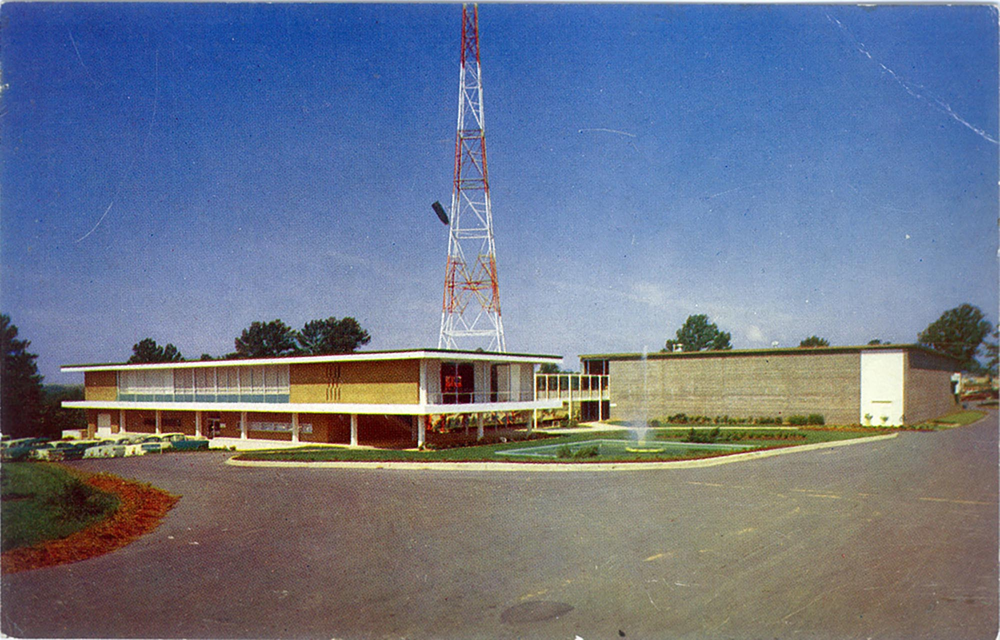
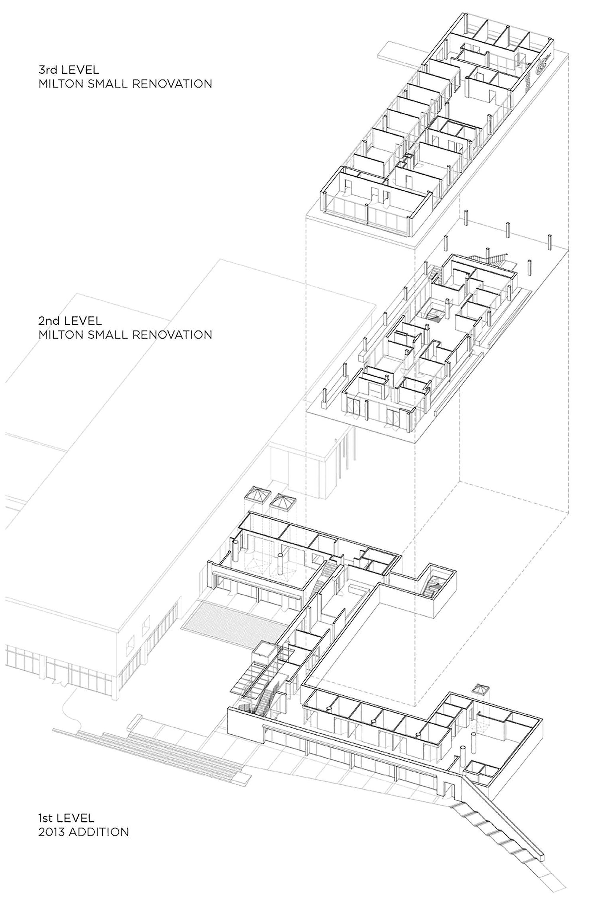
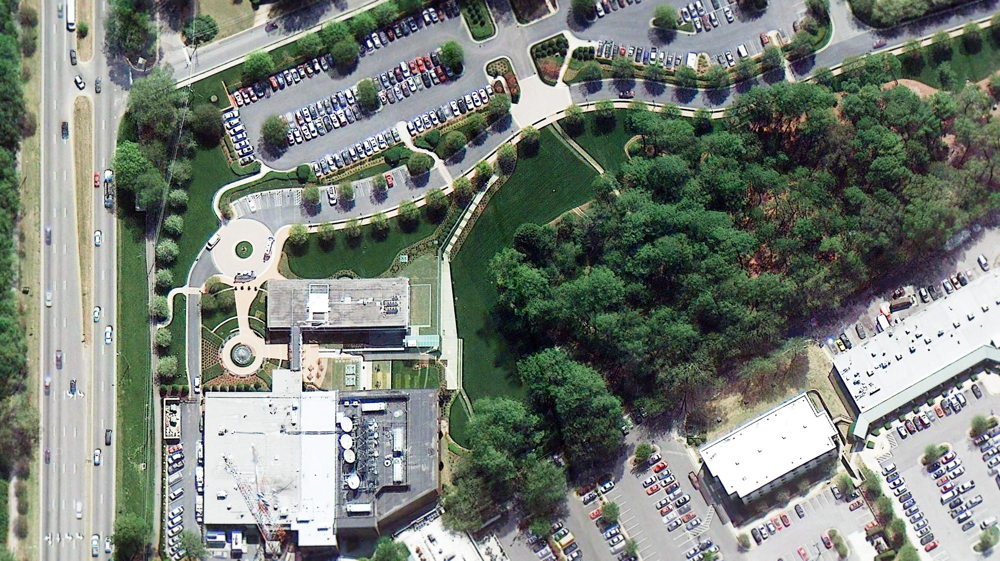

In 1939, WRAL of Capitol Broadcasting began transmissions as Raleigh’s second radio station.

Photographs taken by Jim Sink.
(Click images to zoom. Click circle to return to top.)
(Click images to zoom. Click circle to return to top.)

The addition accomplishes two things: it is bermed in order to defer to the original architecture and open up directly to the WRAL gardens.

The design is intended to wrap itself around the landscape beautifully and humbly.

Technical challenges included the extensive green roof, waterproofing, retaining earth, drainage, achieving proper daylighting, and strict height restrictions.


